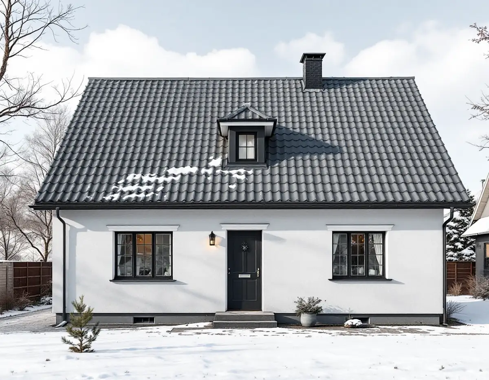
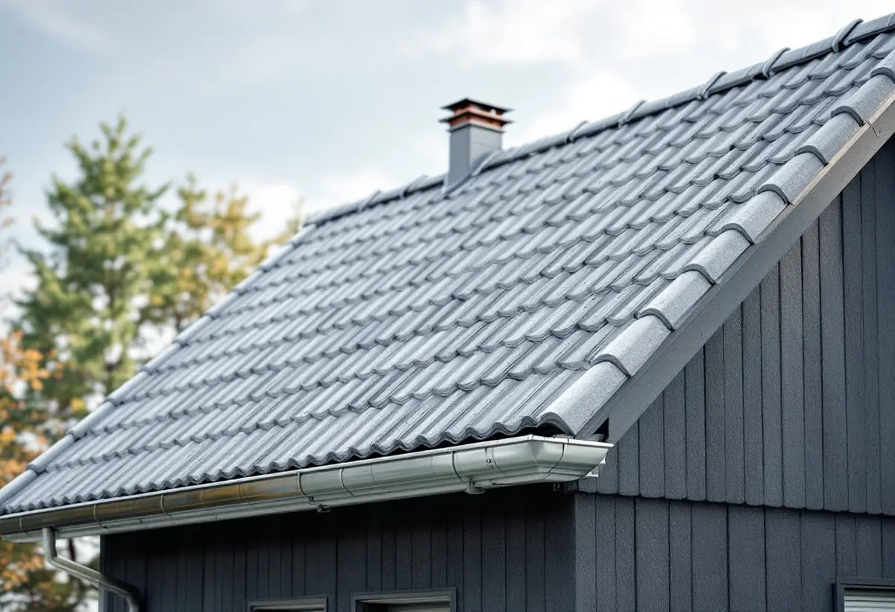
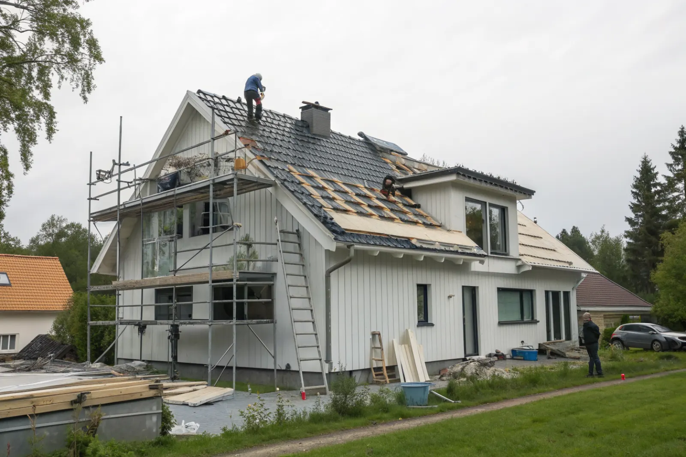
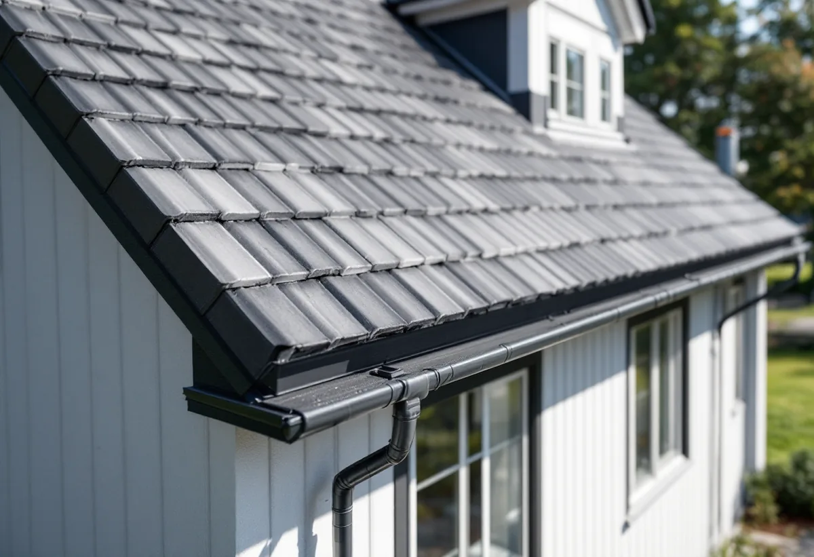

Besiktning
Vi går igenom pannor, papp, läkt, råspont och plåt och lämnar en skriftlig åtgärdsplan.

Är pannorna fortfarande hela men underlaget slitet?
Skicka gärna en bild på taket.
Något blev fel. Kontrollera uppgifterna eller ring 08 12 410 276.
Vi tittar på jobbet på plats innan du får offert.
Du ser vad som ingår och vad det kostar.
Vi drar av ROT direkt och sköter ansökan.
Geal Entreprenad AB, Bromma. Org.nr 559303-7566.

Då kan en takomläggning ge taket 30–40 år till – för en lägre kostnad än ett helt nytt tak. Vi renoverar villatak i hela Storstockholm.
Takrenovering är rätt när takets bärande delar är sunda men skikten under eller runt pannorna har gjort sitt. Det vanligaste exemplet är ett betong- eller tegeltak från 1960–80-talet där pannorna fortfarande är hela, men där underlagspappen har blivit spröd, läkten har börjat ruttna eller plåten runt skorstenen läcker.
Ytan på taket ser ofta bra ut från gatan. Problemen syns i stället på vinden: fuktfläckar på råsponten, mögellukt, droppmärken på isoleringen eller dagsljus genom taket. Det är tecken på att vatten tar sig förbi pannorna och att underlaget inte längre är tätt.
Vi hjälper dig välja rätt nivå efter en takbesiktning: punktvis reparation, takomläggning eller takbyte. Jämförelsen finns också i guiden takbyte eller takrenovering.


Underlagspapp från 60- och 70-talet var ofta tunn och har efter 40–50 år förlorat sin täthet. Pannorna kan ha flera decennier kvar, men utan ett tätt underlag blir taket bara så bra som sitt svagaste skikt.
Vänta inte tills läckaget syns i taket inomhus. Fukt som får verka i flera år kan skada råspont och takstolar, och då blir en renovering snabbt ett byte.
Vid en takomläggning plockar vi ner alla pannor, byter underlagspapp och läkt och lägger sedan tillbaka samma pannor. Trasiga pannor ersätts med nya eller begagnade av samma modell. Resultatet är ett tak med helt nytt tätskikt men med husets ursprungliga karaktär kvar.
Takomläggning lönar sig när pannorna är i gott skick. Betongpannor håller ofta 40–60 år och tegelpannor betydligt längre. Är pannorna däremot porösa, frostsprängda eller av en modell som inte längre tillverkas kan nya pannor vara ett bättre val.
Vid omläggningen passar vi på att åtgärda allt som är svårt att komma åt annars: ventilation av takfoten, infästning av nock, plåtdetaljer, vindskivor och genomföringar.
Vi går igenom pannor, papp, läkt, råspont och plåt och lämnar en skriftlig åtgärdsplan.
Ställning och fallskydd sätts upp och tomten skyddas.
Pannorna plockas ner och hela pannor sparas för återläggning.
Ny underlagspapp och läkt; skadad råspont byts.
Pannorna läggs tillbaka och kompletteras där det behövs.
Plåt runt skorsten, nock och genomföringar görs om och vi gör slutkontroll.
Alla tak behöver inte omläggning. Ofta räcker det att byta några spruckna pannor, laga plåten runt skorstenen eller täta ett takfönster. Vi gör även takreparationer och åtgärder vid akut takläckage.
En liten reparation i tid förhindrar en stor skada senare. Vid besiktningen får du veta vad som är bråttom och vad som kan vänta.
Kostnaden styrs av takets storlek och lutning, hur många pannor som kan återanvändas, hur mycket råspont som måste bytas, plåtarbeten och ställningsbehov. Därför kan två villor med samma yta få olika pris.
Vi publicerar inga fasta priser. Vi kommer ut gratis, tittar på taket och lämnar ett skriftligt kostnadsförslag där varje moment står med. Faktorerna som påverkar priset går vi igenom i vad kostar en takrenovering.
Arbetet kan också delas upp i etapper – till exempel den mest utsatta takfallet först och resten året efter.
Takrenovering och takomläggning på villa ger ROT-avdrag på arbetskostnaden. Vi gör avdraget direkt på fakturan. För 2026 är ROT-avdraget 30 % av arbetskostnaden, med ett tak på 50 000 kr per person och år. Läs mer i vår guide om ROT-avdrag för takarbete.
Så väljer du rätt åtgärd för ditt tak.
Takbyte eller takrenovering? →Vad som påverkar kostnaden.
Vad kostar en takrenovering? →Hur länge pannor och papp håller.
Livslängd per takmaterial →Eller ring 08 12 410 276, mån–fre 08–17.
Skicka gärna en bild på taket.
Något blev fel. Kontrollera uppgifterna eller ring 08 12 410 276.